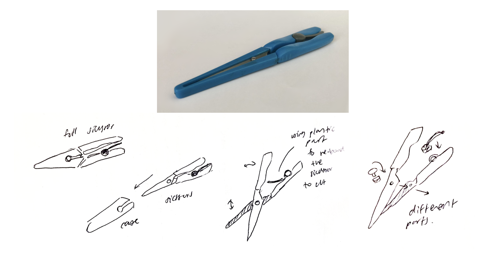
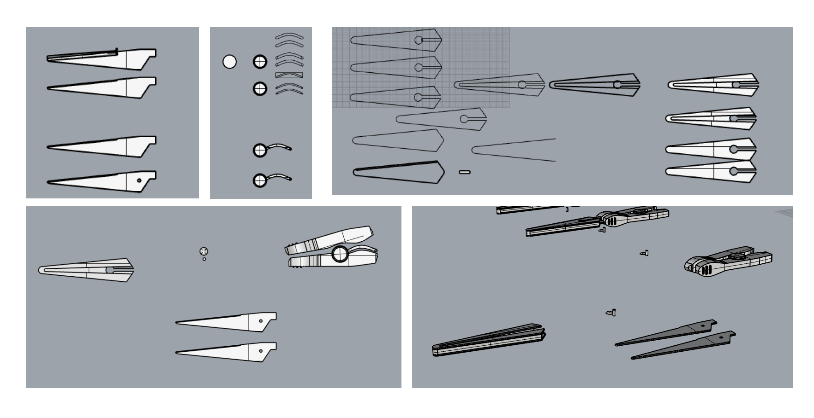
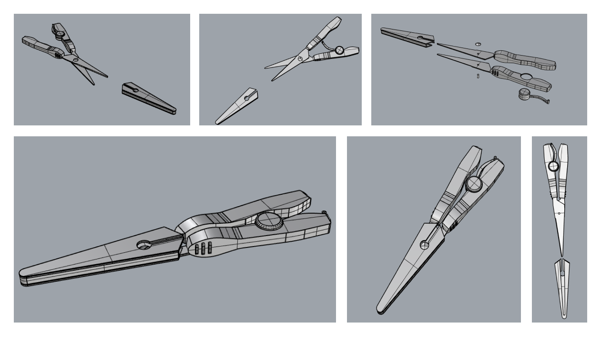
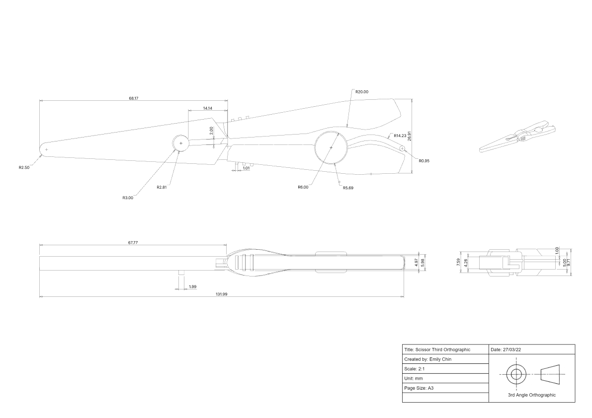
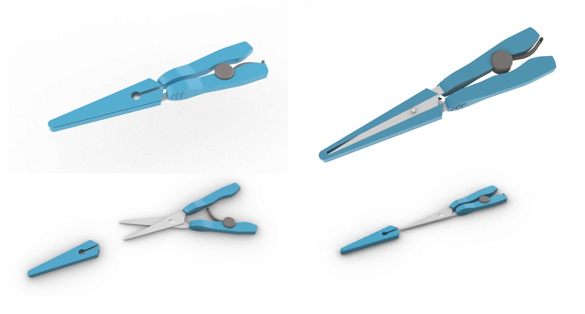

Reverse Engineering
DESIGN 100 @ UOA
This mini project looked at reverse engineering a product and figuring out how it was created. Breaking down the steps and measurements of the choosen item, in my case a foldable pair of scissors.
Type: Design
Programs: Rhino7, and Blender.
Skills: Design thinking, Documentation of design process, 3D modelling, Technical drawings, and Sketching.
Date: 2022
Supervised by Melody Elwood in DESIGN 100: Design Methods and Processes 1 @ UOA
PROCESS
For this project, I had chosen to use this pair of portable scissors as my object, as I could identify parts of the scissors visually from the outside without having to take apart the object.
I started by quickly sketching out how each of the pieces is made up to make up the scissors and understanding how the scissors work. I also identified the materials the scissors were made up of, steel for the blades and ABS plastic for the rest of the scissors.
Progress - 3D modelling
I had then started to model the object within Rhino 7. I started with modelling each of the individual pieces that make up the scissors. I had used my ruler to measure each of the parts during the modelling portion. For most of the modelling part, I had made the vector of one side/view of the part and then extruded the curve, and then used the command “boolean2object” to cut out the shape in an object.
After modelling each of the parts, I put them all together to create the final scissor model, with the option to move around each of the pieces to demonstrate the movement.
Specfication drawing
Here is the exploded view and third angle orthographic drawing. I had then created the specification drawings by using the command “Make2D” in Rhino 7 to give the 2D vectors of the views. I had then went in with the “Dim” command to make the measurements shown on the drawings. I had then created the tables on google docs and edited them on top of the exported drawings from Rhino 7.
Final Renders
Here are the final renders of the model in Rhino 7, I had also put in the materials on Rhino 7 of the object, such as the metal on the blades and the plastic on the rest of the scissors.
I had also created animated gifs to show the movement of the objects and how the object is assembled together with each of the parts. This was done by exporting the final model from Rhino 7 into Blender and animating the gifs in Blender.
Reflection
I had found this project to be interesting as I was able to look more in-depth into an everyday object to figure out how it works and how it is assembled. Specific things I had learnt throughout this project was being able to 3D model in Rhino 7. As I hadn’t heavily used Rhino for 3D modelling before, I was able to practice my modelling skills more. I had also learnt more about specific Rhino 7 commands, such as the command “Make2D”.